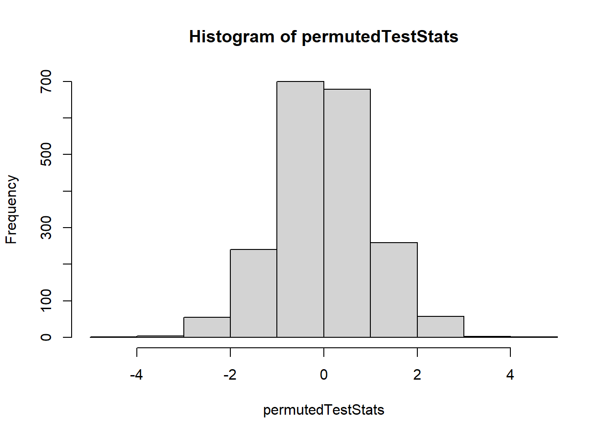
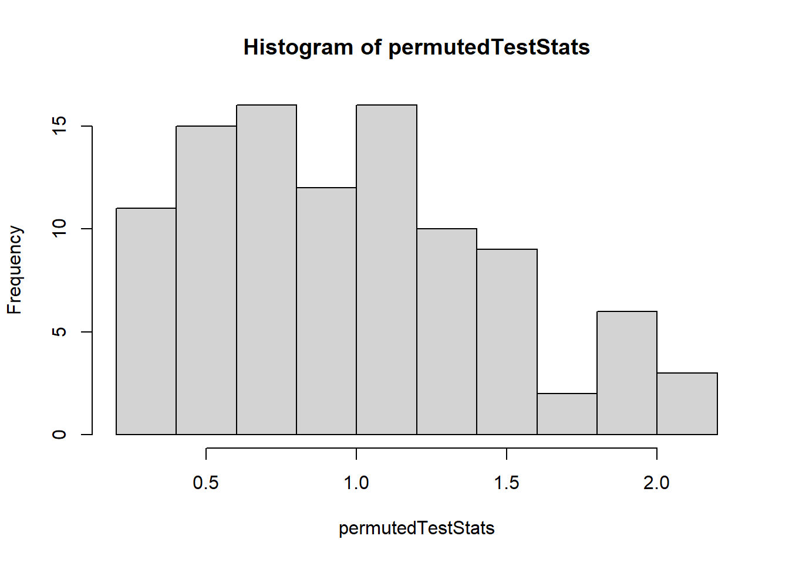
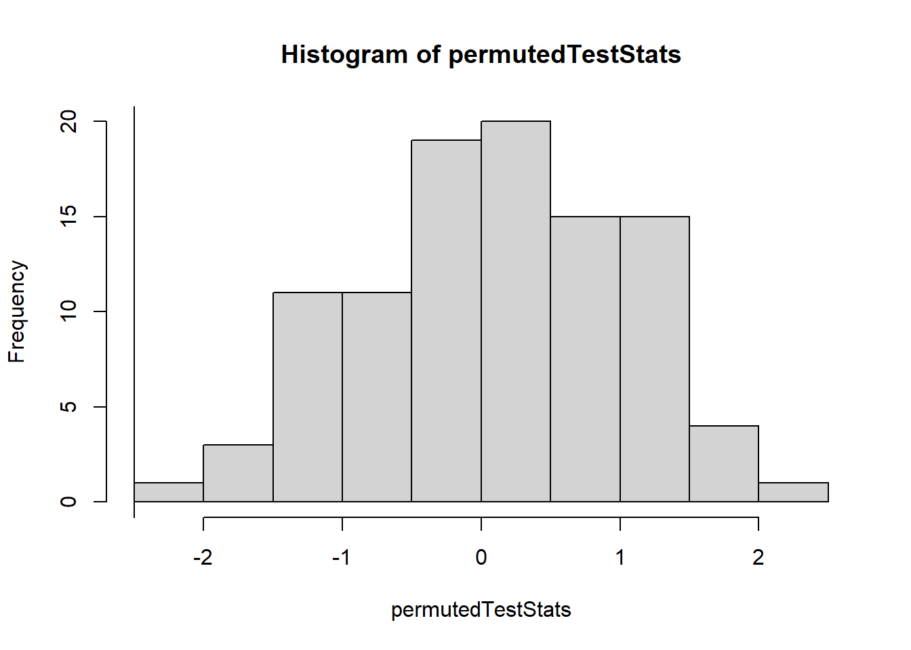

GGplot Cheatsheet ## Notes
Add your own notes here…
# Add R commands you want to remember here...
library(mosaic)## Registered S3 method overwritten by 'mosaic':
## method from
## fortify.SpatialPolygonsDataFrame ggplot2##
## The 'mosaic' package masks several functions from core packages in order to add
## additional features. The original behavior of these functions should not be affected by this.##
## Attaching package: 'mosaic'## The following objects are masked from 'package:dplyr':
##
## count, do, tally## The following object is masked from 'package:Matrix':
##
## mean## The following object is masked from 'package:ggplot2':
##
## stat## The following objects are masked from 'package:stats':
##
## binom.test, cor, cor.test, cov, fivenum, IQR, median, prop.test,
## quantile, sd, t.test, var## The following objects are masked from 'package:base':
##
## max, mean, min, prod, range, sample, sumlibrary(tidyverse)## -- Attaching packages --------------------------------------- tidyverse 1.3.1 --## v tibble 3.1.1 v purrr 0.3.4
## v tidyr 1.1.3 v stringr 1.4.0
## v readr 1.4.0 v forcats 0.5.1## -- Conflicts ------------------------------------------ tidyverse_conflicts() --
## x mosaic::count() masks dplyr::count()
## x purrr::cross() masks mosaic::cross()
## x mosaic::do() masks dplyr::do()
## x tidyr::expand() masks Matrix::expand()
## x dplyr::filter() masks stats::filter()
## x ggstance::geom_errorbarh() masks ggplot2::geom_errorbarh()
## x dplyr::lag() masks stats::lag()
## x tidyr::pack() masks Matrix::pack()
## x mosaic::stat() masks ggplot2::stat()
## x mosaic::tally() masks dplyr::tally()
## x tidyr::unpack() masks Matrix::unpack()library(pander)
library(DT)
library(ggplot2)
library(car)## Loading required package: carData##
## Attaching package: 'car'## The following object is masked from 'package:purrr':
##
## some## The following objects are masked from 'package:mosaic':
##
## deltaMethod, logit## The following object is masked from 'package:dplyr':
##
## recode#{r, message=FALSE, warning=FALSE} library(mosaic) library(tidyverse) library(pander) library(DT) #
# Or create other R chunks to put them in like this...# Using ```{r, eval=FALSE} turns off the chunk, but still shows it.
# Useful when you want to remember code, but not run it in this file.T-test
mycars <- filter(mtcars, mtcars$cyl == 4 | mtcars$cyl == 8)
test <- t.test(wt ~ cyl, data=mycars, mu = 0, alternative = "two.sided", conf.level = 0.95)
observedTestStat <- test$statisticPermutation
N <- 2000
permutedTestStats <- rep(NA, N)
for (i in 1:N){
permutedData <- sample(mycars$cyl)
permutedTest <- t.test(wt ~ permutedData, data=mycars, mu = 0, alternative = "two.sided", conf.level = 0.95)
permutedTestStats[i] <- permutedTest$statistic
}
hist(permutedTestStats)
abline(v=observedTestStat)
#Greater-Than p-value: Not the correct one in this case
sum(permutedTestStats >= observedTestStat)/N## [1] 1# Less-Than p-value: This is the corret one
sum(permutedTestStats <= observedTestStat)/N## [1] 0# Two-Sided p-value
2*sum(permutedTestStats <= observedTestStat)/N## [1] 0Anova
#View(diamonds)
myTest <- aov(price ~ clarity, data= diamonds)
observedTestStat <- summary(myTest)[[1]]$`F value`[1]
observedTestStat## [1] 215.0193Permutation
N <- 100
permutedTestStats <- rep(NA, N)
for (i in 1:N){
permutedData <- sample(diamonds$price)
permutedTest <- aov(permutedData ~ clarity, data= diamonds)
permutedTestStats[i] <- summary(permutedTest)[[1]]$`F value`[1]
}
hist(permutedTestStats)
abline(v=observedTestStat)
#Step 3
sum(permutedTestStats >= observedTestStat)/N## [1] 0sum(permutedTestStats <= observedTestStat)/N## [1] 1Logistic test
#Step 1
View(SAT)
SAT$great <- case_when(SAT$sat <= 1000 ~ 0, SAT$sat >1000 ~ 1)
myTest <- YourGlmName <- glm(great ~ expend, data = SAT,
family=binomial)
summary(YourGlmName)##
## Call:
## glm(formula = great ~ expend, family = binomial, data = SAT)
##
## Deviance Residuals:
## Min 1Q Median 3Q Max
## -1.5553 -0.9711 -0.5531 1.0191 1.8355
##
## Coefficients:
## Estimate Std. Error z value Pr(>|z|)
## (Intercept) 4.3852 1.8885 2.322 0.0202 *
## expend -0.8385 0.3354 -2.500 0.0124 *
## ---
## Signif. codes: 0 '***' 0.001 '**' 0.01 '*' 0.05 '.' 0.1 ' ' 1
##
## (Dispersion parameter for binomial family taken to be 1)
##
## Null deviance: 67.301 on 49 degrees of freedom
## Residual deviance: 58.187 on 48 degrees of freedom
## AIC: 62.187
##
## Number of Fisher Scoring iterations: 4observedTestStat <- summary(myTest)[[12]][2,3]Permutation
#Step 2
N <- 100
permutedTestStats <- rep(NA, N)
for (i in 1:N){
permutedData <- sample(SAT$great)
permutedTest <- myTest <- glm(permutedData ~ expend, data = SAT,
family=binomial)
permutedTestStats[i] <- summary(myTest)[[12]][2,3]
}
hist(permutedTestStats)
abline(v=observedTestStat)
#Step 3
sum(permutedTestStats >= observedTestStat)/N## [1] 1sum(permutedTestStats <= observedTestStat)/N## [1] 0